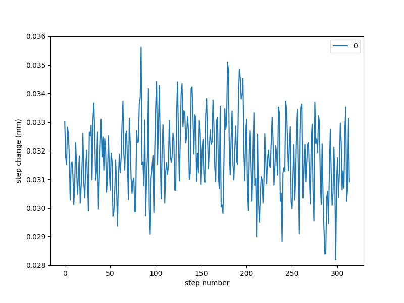
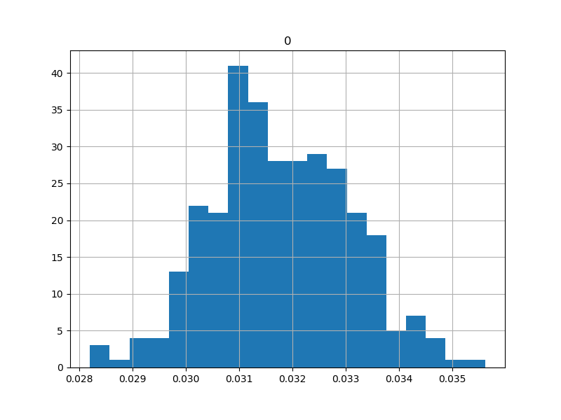

Flexural Actuator Test
I am interested in building a machine to assemble ~mm parts with ~10 um features into a ~100 um pitch lattice to ~cm scale. If the parts are planar and have self-aligning features, I will need ~10 um repeatability over the build volume and can cut the parts out of ~100 um stock.
I am also interested in flexural machine construction, and in generally minimizing specialized parts required for the project. I would like to avoid lapping and a ton of aligning, if possible, and do not want to spend thousands of dollars on precision parts. Compared to subtractive machines, I do not expect to need high stiffness, since the tool exerts minimal force. Maybe on the order of mN/um, particularly if the machine springs back when unloaded (i.e. doesn't have significant hysteresis/backlash). In fact, elasticity on the order of (assembly force) / (feature size) could help self-alignment. I have a few loop-closing ideas that may help reduce the repeatability requirement, but will need real resolution in the ~um range. Since this is a discrete layer-by-layer assembly process, path planning in X and Y is not important but Z will need to be independent to avoid collisions.
Flexures provide an interesting opportunity to use linkages to dramatically multiply and divide dimensions without adding backlash to the system. The modular superelastic flexures I discussed earlier will not behave like ideal pin joints; instead, the instantaneous center of rotation will move as the flexure is bent, slightly changing the linkage's path. A good deal of prior work has gone into studying how this motion changes with flexure geometry; generally, hyperbolic flexures distort less than elliptical flexures, and the radiused beam flexures I will use certainly are not ideal. But as long as this error stays below the repeatability requirements described above, the system should be sufficient to allow approximation of Cartesian coordinates from J-space with simple geometric relationships. If that is not possible, then perhaps the system will still be deterministic enough to allow calibration or loop-closing to hit the spec. Of course, Nitinol's hysteresis loop could be large and unreliable enough (i.e. affected by fatigue, etc) that loop-closing is necessary regardless.
One could estimate the effect of flexure distortion as a function of joint angle and propagate this error through the linkage. Instead, I built a physical prototype. There are other factors of concern that are harder to predict; flexure consistency (thickness, local heat treatment, surface finish effects), assembly-induced lattice distortion (which depends on hammer tap intensity), WEDM flexure vs waterjet/ream frame fabrication, etc. I decided to test the entire concept using a laser displacement sensor and a few other bits:
The apparatus uses a NEMA 14 stepper motor to drive a GT2 timing belt around two idlers and on to an umbrella-shaped arm. The umbrella's circular "roof" has a radius of 200.0 mm with a center that overlaps the umbrella pivot flexure's center, which should at least be the starting point for its instantaneous center of rotation. As long as the "roof" doesn't exceed its travel stops or distort too much (and the center of rotation doesn't move too much), the belt will stay tangent and its path length shouldn't change, so it should stay tensioned (and the belt stretch can take up this while adding bias).
update 03082021: I counted 16 teeth on the pinion. Thus, the pitch diameter is (16.00 * 2.00) / pi = 10.19 mm. Thus, the gear ratio between the stepper and the umbrella-shaped arm is (10.19 / 2.000):200.0 = 1:39.25. Since the stepper motor has 200.0 steps per revolution, or 1.800 degrees per step, each step will turn the umbrella-shaped arm around its pivot by 1.800 / 39.25 = 0.04586 degrees = 0.8004 mrad. The output linkage connects 40 mm from the umbrella-shaped arm's pivot, so at the vertical point it translates +/- 40 * sin(0.0008004) = 28.71 um. A spot measurement using the laser displacement sensor returned a single-step change of 32.19 um at roughly the center point:
I single-stepped (technically 16-microstepped) the mechanism through the laser displacement sensor's 10 mm measuring range with 250 ms pauses at each point:
Zooming in a bit shows that the shorter pauses (vs the 500 ms pauses in the first test) aren't quite adequate to eliminate ringing:

Using pandas, I iterated through the data set and averaged the less noisy part of the plot. You can take a look at the Jupyter notebook for code details; roughly, I checked for changes to the measured value of greater than 0.010 mm between two given data points, and then dropped the following 10 data points before averaging the rest and dumping the resulting value into a new list. Then I plotted the change in these averages as a function of step number:

Not much evidence of cosine error, which isn't surprising given the relatively minimal anglular displacment (+/- ~7 degrees). Taken as-is, the data appears fairly normal:

A Shapiro-Wilk test returns p = 0.845, so it's reasonable to believe the stats: avg = 0.0318 mm, stdev = 0.00130 mm. This is promising given the requirements above, especially given this is an uncorrected open-loop result.
In order to see if the error scaled with displacement, I ran the same test with 5-step jumps. The plot shows quite a bit more ringing:

The mechanism also exhibited more audiable "clacking", which was traced back to the spring-loaded linear stage skipping off the linkage. Since this stage is only used to provide an accurate reference for the laser displacement sensor, the ringing itself isn't particularly interesting; unfortunately, the magnitude of this effect made the resulting data quite noisy.
Microstepping is normally used to ensure smooth motion; trying to use it to increase resolution is generally not considered good practice. To demonstrate this, I ran the same test with 1/16 microstep increments:
Interesting results which clearly vary depending on approach direction. A future exploration could see how this changes with load, or if different drivers (like the fancy Trinamic chips I keep hearing about) give a better result. Jake also offered up a few of his loop-closing stepper boards which I look forward to trying.